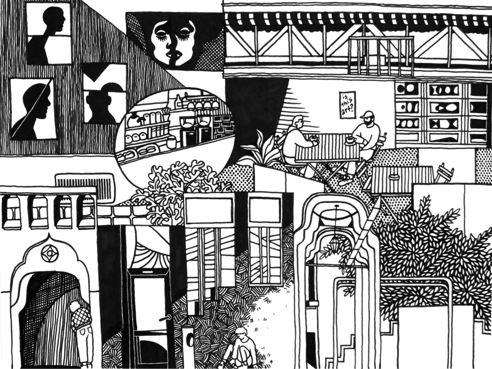
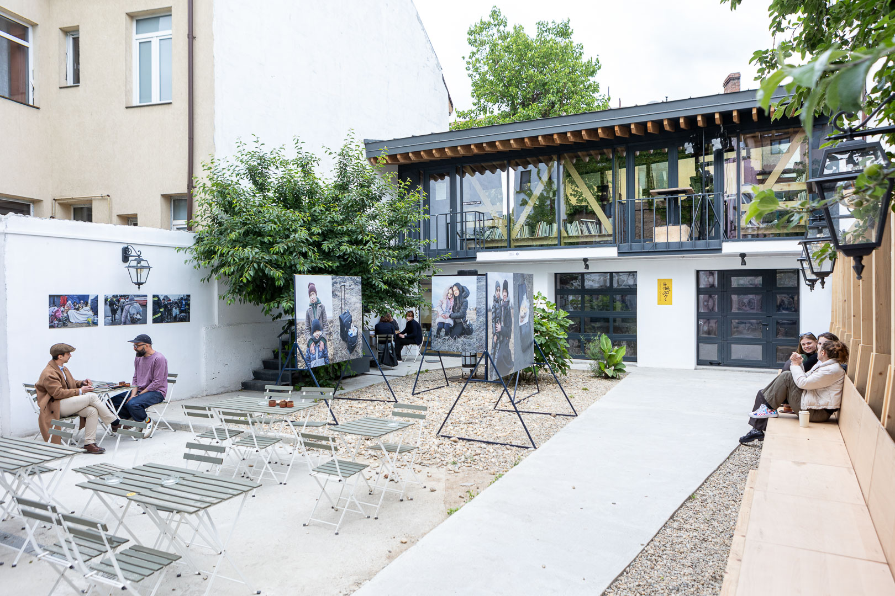
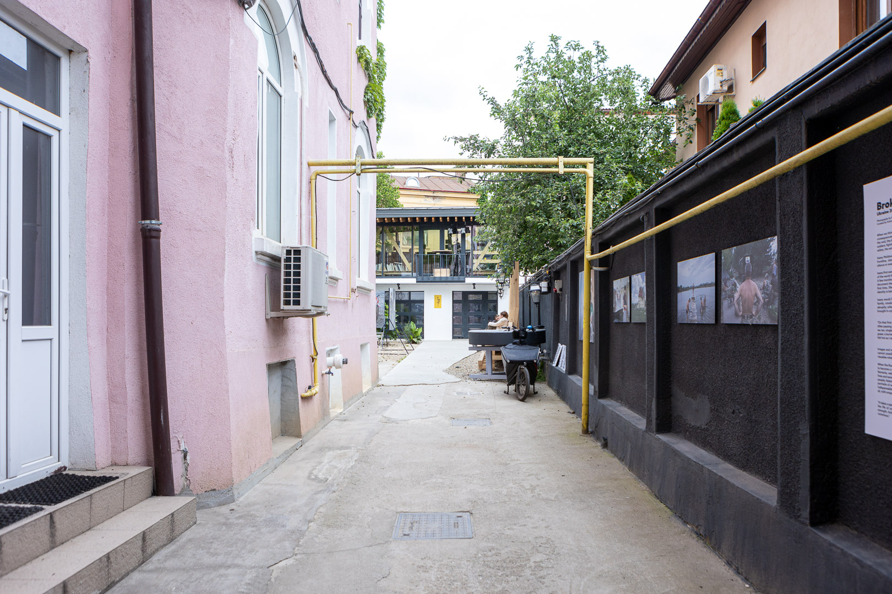
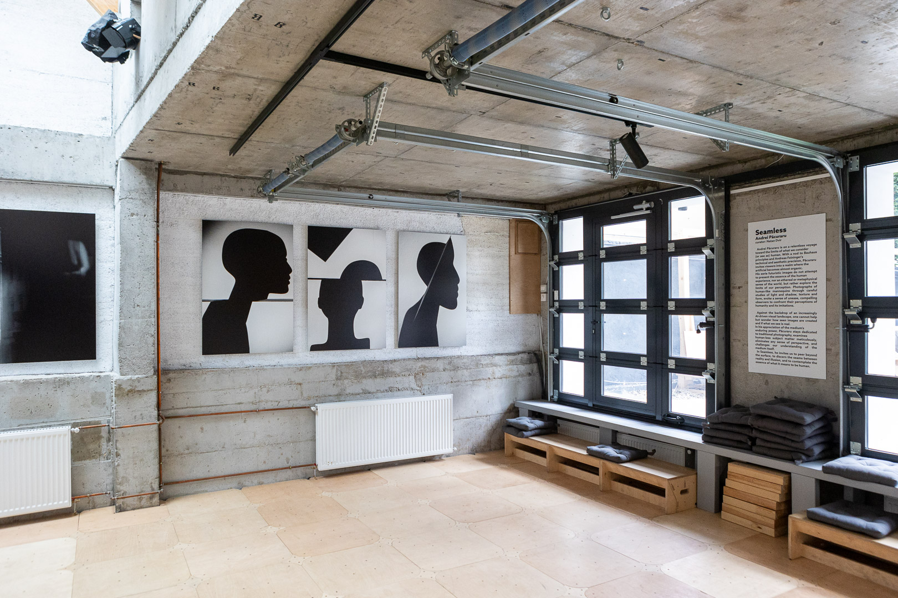
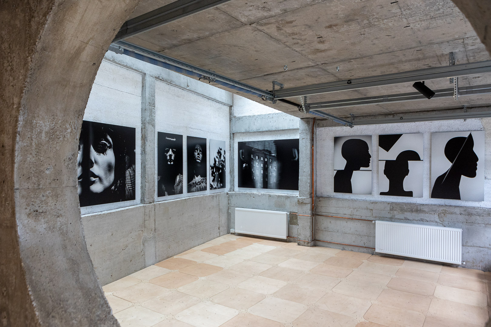
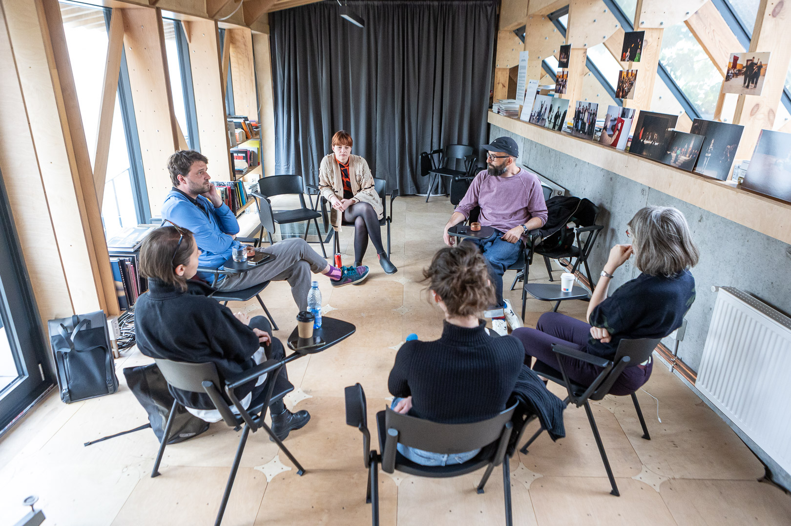

La numărul 68 de pe Popa Tatu se află în prezent două construcții: o casă veche cu gang, semnată de arhitectul Alexandru Iotzu și o construcție (aproape) nouă, departe de stradă, în curtea interioară, realizată de biroul de arhitectură BAAB. Construcția a fost finalizată în 2023 și este sediul Centrului de Resurse în Fotografie (CdRF), proiect finanțat prin fonduri SEE și programul RO-CULTURA. La parterul CdRF se află o galerie și o cafenea de specialitate, iar în curte sunt răspândite câteva măsuțe unde te poți ascunde de traficul stradal.
În 2023, Centrul de Resurse în Fotografie și-a deschis oficial porțile într-un cartier care pare să fie supus unei reconfigurări lente și continue, atât din punct de vedere social, cât și urbanistic. Țesutul urban de secol XIX-XX a fost completat recent cu clădiri de locuințe colective, dar încă există terenuri goale și imobile într-o stare avansată de degradare ce așteaptă să fie reabilitate.
CdRF se află în apropierea Gării de Nord și a fostelor hale din Piaţa Matache Măcelaru, construite în 1887, o zonă pe atunci foarte activă comercial pentru artizani și meșteșugari. În 1948, piața a devenit piaţă de stat, primind numele Piaţa Ilie Pintilie. Șaizeci și cinci de ani mai târziu, cartierul a fost marcat de pierderea clădirii de patrimoniu Hala Matache. În 2013, acest nucleu reprezentativ pentru identitatea capitalei a fost demolat abuziv, peste noapte, sub mandatul fostului primar Sorin Oprescu. Tot atunci, zeci de alte monumente istorice au fost puse la pământ, cu toate avizele cheie, mai puțin cele de la Ministerul Culturii. Scopul demolării? Construirea Diametralei nord-sud, pe axa Buzești - Berzei - Uranus, un proiect de infrastructură urbană pentru fluidizarea traficului care a distrus un segment istoric important pe harta orașului. Acest caz a fost bine documentat prin proiectul Platforma Matache, care a adunat mărturii, articole și a realizat un documentar valoros despre întreg procesul de demolare și consecințele acestuia.
Deși în prezent este o zonă în preponderent rezidențială, în ultimii ani au apărut diverse spații care i-au adus împreună pe cei interesați de cultură, fotografie sau viața socială a orașului. Recent, în zonă s-au deschis două centre de developare foto, ISO 400 și Camera Lucidă, iar până nu demult, la Popa Tatu 20, a funcționat librăria Dispozitiv Books. În primăvara anului 2023 au început lucrările pentru Teatrul Grivița, care își va deschide porțile către public în următorii ani.
Terenul pe care a fost ridicat CdRF a fost cumpărat în 2011, o perioadă în care clădirile din cartierul Matache aveau încă prețuri de vânzare mici pentru că lumea considera zona rău famată. „În afară de faptul că, într-adevăr, mai găseam seringi pe jos seara, totul era super ok”, își amintește Andreea. Pentru membrii fondatori ai echipei, felul în care era percepută zonă nu a fost un impediment și au înțeles că, odată ce te-ai stabilit în cartier, ești vecin și faci parte din comunitate.
CdRF a fost construit în zona protejată nr. 44 - Temișana, stradă pe care se află o casă monument, așa zisul „Palat venețian” de la numărul 2-4. Obținerea autorizației în zonele protejate este întotdeauna mai dificilă, fiind necesară o documentație temeinică și avize de la diverse instituții, printre care și Ministerul Culturii. „Ne-am împrietenit cu poliția locală, cu ISC-ul (Inspectoratul de Stat în Construcții)”, ne povestește Alex, care s-a ocupat de dosar. „Am fost fix contribuabilul nevinovat care s-a dus cu teancul de dosare". El spune că oamenii din administrație nu era rău intenționați, dar faptul că făceau parte dintr-un mecanism greoi care pornește de la o prezumție de vinovăție îi făcea să acționeze ca atare. „Credeau că vreau să-i păcălesc zicând că vreau să construiesc un parter cu o mansardă și că, de fapt, o să fac cu totul altceva”.
Procesul a durat destul de mult, mai ales dacă luăm în calcul desfășurarea șantierului propriu-zis. Cu toate acestea, perioada prelungită de așteptare a fost și un avantaj, fiind un timp de aprofundare și rafinare a ideilor cu care echipa CdRF pornea la drum. „Avem un privilegiu pe care îl înțelegem. Liniște și bază. Avem vise, dar nu suntem pregătiți să le spunem public încă.”
Sediul CdRF a fost proiectat de biroul de arhitectură BAAB și are trei spații principale: o mansardă (30m2) și două spații la parter (50m2) — unul pentru galerie și celălalt pentru cafenea, legate și simultan separate printr-un perete-paravan în care a fost decupat un gol generos în formă de cerc.
În anii ’50, în spatele curții fuseseră construite trei garaje. „Proiectul oficial a fost mansardarea acestei anexe gospodărești [garajele] și reabilitarea fundațiilor și a beciurilor”, ne-a spus Irina, cu care ne-am dat întâlnire într-o dimineață însorită în curtea interioară a CdRF.
Provocarea pentru BAAB a fost majoră: era vorba de transformarea unor foste garaje într-o clădire culturală, luând totodată în considerare contextul urban. Rezultatul final este „un obiect arhitectural” pe cât de compact, pe atât de plin de detalii care nu se fac văzute decât la a treia sau a patra vizită. Din fostele garaje au mai rămas amprenta și beciul ascuns de o trapă, chiar sub cafenea.
Ca referință la aceste foste construcții din curte și la specificul Bucureștiului, un oraș al straturilor suprapuse și al reconvertirilor, spațiul de la parter se închide în continuare cu uși rulante. O altă referință la fosta construcție este structura de beton masiv a parterului. Aceasta nu a fost finisată și are un aspect mai brut. Fiindcă s-a construit la trei calcane (pereți de legătură între proprietăți), pentru a câștiga spațiu în grosime, arhitecții au folosit pentru umpluturi un material ecologic experimental, hempcrete, „beton din paie”, cum îi spune Irina. Spre deosebire, de exemplu, de cărămidă, acesta este și subțire, și termoizolant. Cu alte cuvinte, galeria CdRF este un spațiu învelit într-o „coajă de beton”, în care cobori. Sentimentul pe care l-am avut la primă vizită a fost acela al unui spațiu abstract în care fotografiile expuse ies parcă din perete.
Atunci când am urcat spre mansardă, pe o scară metalică exterioară, atmosfera s-a modificat complet. În loc de beton pur și beton din paie, am poposit într-un fel de cocon de lumină, realizat cu precădere din lemn, metal și sticlă. Experiența senzorială a fost diferită. În pardosea am descoperit un hublou care te lăsa să „spionezi” ce se întâmplă dedesubt. De fapt, mansarda comunică cu toate spațiile din jurul ei: poți vedea atât curtea interioară a Centrului, cât și vegetația din curtea vecinilor din spate, tipică Bucureștiului vechi (pomi fructiferi).
Nu vom divulga toate surprizele pe care le-am avut parcurgând clădirea de pe Popa Tatu, vom spune numai că undeva există un minunat pătrat, iar altundeva o pasarelă.
Popa Tatu este o „stradă-pod” pentru mașini care traversează rapid și eficient dinspre centru înspre gară. Indiferent de ce se întâmplă la stradă, în curtea interioară e liniște. În weekend e plin de copii. E un loc sigur și prietenos, în jurul căruia s-a format deja o mică comunitate de vecini care vin să-și bea cafeaua acolo.
Intrarea în această oază de liniște se face prin intermediul unui gang, care pornește dinspre stradă. Pe vremuri, gangul era perceput ca acel spațiu întunecat al groazei, în care copiii se jucau și se speriau reciproc. Gangul de la CdRF nu se înscrie în aceste mitologii urbane, fiind pe vremuri calea de acces pentru mașini către garajele din spatele curții. Ce este interesant, ne-a făcut Irina să realizăm, este că astăzi nici o mașină nu mai este suficient de suplă pentru a intra prin gang. Dimensiunile mașinilor au crescut considerabil din anii ’50 încoace.
Gangul are un tavan înalt și funcționează ca un spațiu intermediar între două paradigme urbane: strada - publică și zgomotoasă, și curtea interioară - intimă și liniștită. Gangul este și cel care anunță că se întâmplă mai multe în curtea din spate: „Trecătorii au văzut mai întâi că se întâmplă ceva în gang și-apoi au intrat să vadă totuși ce e aici”, ne spune Andreea.
Acest spațiu a fost conceput cu un scop diferit de cel al galeriei, spațiul expozițional principal, fiind dedicat fotografilor aflați la începutul carierei. În ciuda faptului că este un loc neconvențional pentru expoziții, gangul se bucură de o vizibilitate mare grație curioșilor care vor să exploreze curtea, chiar dacă nu mai ajung și în galerie.
„Gangul este prevăzut să fie acest spațiu unde noi zicem «Ok, vrei să expui? Hai să expui. Te ajutăm cu conceptualizarea.» ”, spune Andreea. În schimb, spațiul galeriei este dedicat unor proiecte curatoriate intern. „În galerie vorbim despre proiecte fotografice pe care le reprezentăm. Ne ocupăm de producție, comunicare. Absolut tot.”, explică ea.
I-am întrebat dacă s-a întâmplat să colaboreze cu cineva care a descoperit CdRF din întâmplare, observând gangul din stradă și fiind curios ce se află la capătul lui. „Astfel de colaborări nu cred că s-au născut doar din proximitate. Oamenii se așteaptă, în general, să plătească pentru un spațiu de expunere. La noi nu-i cazul, adică ce vedeți în curte și în gang e free of charge”.
Cu toate acestea, există și excepții atunci când spațiul exterior îl continuă pe cel al galeriei, fiind folosit pentru expoziții interne. Când ne-am întâlnit cu Alex, Andreea și Ion, în gangul, curtea și galeria CdRF erau găzduite două expoziții de fotografie - Broken Borders și Seamless. Ambele proiecte plecaseră de la ideea de a aduce laolaltă un curator străin și un artist român. Pentru spațiile exterioare, gang și curte, match-ul a fost între Ioana Moldovan și curatoarea Arianna Rinaldo, iar pentru galerie, cel dintre Andrei Păcuraru și Natan Dvir (câteva detalii despre cele două expoziții aici).
Nici unul dintre cei trei membri fondatori ai CdRF nu își atribuie titlul de „fotograf”. Mai degrabă, echipa CdRF vorbește despre mijlocire, punere la cale, aducere laolaltă.
Odată ce proiectul a câștigat finanțarea, Andreea și Ion s-au gândit să anime spațiul de pe Popa Tatu prin organizarea cât mai multor evenimente. Este un model pe care l-au urmat cu succes în Mangalia, în cadrul proiectului Grădina Culturală Callatis. Acolo, în calitate de consultanți, i-au sfătuit pe angajații de la Direcția de Cultură și Sport să mizeze pe microevenimente și pe diversitate pentru a da viață grădinii Callatis și a-i pune în lumină pe artiștii locali. „Același lucru îl încercăm și aici [la CdRF]. Avem multe evenimente, multe și mărunte, tocmai ca să activăm spațiul într-un fel, ca oamenii să înțeleagă că pot veni aici, că se întâmplă lucruri, că ești binevenit”, ne-a spus Ion, iar Alex l-a completat enumerând tipul de evenimente pe care le găzduiește spațiul de pe Popa Tatu: „(…) nu doar că sunt niște fotografii pe pereți, ci se mai întâmplă artist talks, se pune muzică, o să avem și niște performance-uri”.
Discutând cu gazdele noastre despre motivația din spatele CdRF, am aflat că dezideratul de început al echipei a fost unul simplu: educația. „Educația a fost și este în continuare crezul nostru. Eu îi întreb pe cursanți inclusiv de ce reclama aia îi atrage și le vorbește, iar alta nu. (…) De ce în ziarul ăsta, cutare întâlnire este portretizată într-un anume fel, iar în ziarul celălalt ai impresia că e cu totul altă întâlnire. De ce atunci când stau pe Instagram, din când în când mă opresc? (…) De ce mă opresc la această imagine? Foarte puțini oameni pot să explice de ce. (…) Avem multe cursuri de fotografie, inclusiv la facultate sau în privat. Dar lipsește educația vizuală. Noi nu facem în școală Desen, toată lumea ia materia asta în derâdere. Se face Matematică la [ora de] desen, se face Dirigenție, dar și Educația vizuală este foarte importantă” (Andreea). În prezent, în mansarda Centrului se țin cursuri de fotografie, contra cost, și tot acolo se află o bibliotecă cu acces liber, unde poți consulta peste 400 de titluri de specialitate (cărți, reviste și albume). Lumina e foarte plăcută și e liniște.
În plus față de cursurile de fotografie și de decodificare a imaginilor din jurul nostru, CdRF își dorește să contribuie și la schimbarea felului în care e percepută fotografia în spațiul românesc. În opinia Andreei, „în percepția publicului, a statului și a fotografilor până la urmă, fotografia e legată de un job sau de Instagram. Nu este legată de un produs de artă. Nu ne gândim că s-ar putea să aibă o valoare, care nu e de 5 lei, că s-ar putea ca valoarea ei să crească în timp. Dar va exista [această percepție], iar noi asta tindem să coagulăm încet, încet”.
Ajungem așadar înapoi la educație: în pofida faptului că fotografia este studiată în universitățile de arte din țară, în ochii publicului larg, ea rămâne mai degrabă un hobby, consideră Andreea. În opinia ei și a lui Ion, există multe aspecte care au condus la această situație: decalajul istoric în raport cu țările din Occident și lipsa de încredere a fotografilor talentați de la noi; accesul financiar încă redus la echipamente performante; lipsa de finanțare publică a fotografiei — în comparație cu filmul, sumele alocate acesteia sunt foarte mici; democratizarea fotografiei și impresia generalizată că oricine se pricepe să „facă poze”, nefiind necesară nici o pregătire specială; și, nu în ultimul rând, prejudecățile despre studiile umaniste și numeroasele fabrici de diplome din mediul privat. Pe axa hobby-produs de artă, fotografia poate ocupa multe poziții, iar CdRF speră să consolideze mai bine segmentul propriu-zis artistic, cât și înțelegerea fotografiei ca purtătoare a unor mize la limită retorice, de transmitere a unui anumit tip de mesaj către un anumit public.
Am rezonat cu poziția echipei CdRF despre educație. O minimă cultură artistică este absolut necesară oricărui individ și poate și mai necesară societății ca ansamblu. Dar, de facto, în prezent, în învățământul preuniversitar din țară, la profilele nevocaționale, există doar două discipline artistice: Educația vizuală și Educația muzicală. Știm cu toții numeroasele și nefericitele prejudecăți despre ora de desen și ora de muzică. „Ciudații” cărora le plac aceste materii, uneori chiar mai mult decât cele catalogate drept „serioase” sau „de viitor”, sunt luați mai mereu peste picior. „Este exact același lucru ca atunci când lumea te întreabă « Ce ai, ești fraier, de ce dai la uman? ». E o cutumă culturală pe care o avem,” ne spune Andreea. La fel cum în licee se râde de cei care merg la uman, în mediul privat, angajatorii surâd dezaprobator în fața studiilor superioare umaniste ale posibililor angajați, etichetându-le drept „supra-calificări”; altfel spus, drept inutile.
În discursul public de la noi, profilul umanist din licee este devalorizat, uneori chiar de autorități. În 2020, Sibi-Bogdan Teodorescu, artist și profesor de Educație vizuală în București, reacționa la propunerea din acel an a Ministerului educației de a transforma Educația vizuală și Educația muzicală în materii opționale — cu alte cuvinte, de a le scoate ușor, ușor, pe tușă. De asemenea, în mediul academic, există o dezbatere de lungă durată despre „criza educației umaniste”. Recent, UBB a lansat o Platformă umanistă pentru a răspunde faptului că „științele care se ocupă de cunoașterea omului și a binelui public, sunt puse într-un con de umbră de științele dedicate naturii/tehnologiei”. În ecou, revista VATRA a publicat în aprilie 2024 un dosar dedicat studiilor umaniste și istoriei „intrării lor în umbră”; articolul lui Marius Lazăr oferă o bună contextualizare sociologică a situației din prezent.
Cu alte cuvinte, lipsa de educație vizuală despre care am discutat cu membrii CdRF are un fundal complex și îngrijorător.
În stânga galeriei, la parterul CdRF spuneam că se află o cafenea, iar în curtea de dincolo de gang, câteva măsuțe răsfirate. Însă spațiul de pe Popa Tatu este gândit pentru a fi în primul rând o galerie: „Noi nu suntem o cafenea, suntem o galerie unde poți să bei și cafea. Cam asta e ordinea lucrurilor”, ne explică Alex. Dar această ordine este pusă în dificultate de evoluția organică a cafenelei și a grădinii-curte: „Chiar dacă poate nu l-am gândit conștient de la început, vedem cum spațiul de aici se transformă într-un third space [al treilea spațiu/spațiu terțiar]”, ne-a spus, în alt punct al discuției, Andreea. Elevi și studenți „vin, iau o carte, iau o limonadă sau cer un pahar de apă și stau cu orele. (…) Vara trecută era plin de tineri care aveau avionul noaptea și așteptau aici, uneori dormeau pe bagaje prin curte”.
Pe scurt, un third space este un loc prietenos, unde comercialul e redus la maximum și unde te simți în siguranță. Noțiunea are o istorie bogată (vezi finalul textului). Înțelesul cel mai accesibil al lui third space este cel propus de sociologul Ray Oldenburg. În 1989, acesta a publicat The Great Good Places, volum în care critica acerb lipsa spațiului public și a celui informal din suburbiile marilor orașe din SUA și încerca să își convingă cititorii de beneficiile enorme pe care astfel de spații le-ar aduce, dacă ar fi prevăzute în planificările urbane.
Pentru autor, „primul spațiu” este cel de acasă, cel de-al doilea este locul de muncă, iar „al treilea spațiu” este pur și simplu locul informal în care oamenii se strâng laolaltă, discută liber, se cunosc între ei și interacționează liber. El nu se rezumă la a fi locul în care „evadezi”, ci este constitutiv pentru cine suntem și pentru comunitate. Exemple de spații terțiare din mediul urban european sunt piațetele, scările unei instituții publice, anumite baruri și cafenele de cartier cu o atmosferă în care consumul nu este pe primul loc, etc.
Esențial pentru un „al treilea spațiu” este neutralitatea sa: aici, diferențele sociale și de vârstă nu mai contează. Mai mult, străinii sunt bineveniți. Deși există obișnuiți ai locului și un oarecare ritual de inițiere prin care trebuie să treci pentru a te integra, aceste locuri au nativ o deschidere față de diferențe. Interacțiunea este liberă de orice scop sau datorie, conversația este întreținută de dragul ei înseși, al plăcerii de a fi laolaltă. Din acest motiv, apar adesea momente de coeziune pe care cei implicați doresc să le reitereze, până în punctul în care acel loc devine o „a doua casă”. Spațiile terțiare sunt locuri nepretențioase, nu ies în evidență. În fond, credea Oldenburg, fără un third space, nu prea există comunitate sau relații de vecinătate reale, ci locuitorii se învârt sisific în roata métro-boulot-dodo (metrou-birou-nani).
Mizele celor de la CdRF poate că nu se suprapun perfect cu cele expuse de Oldenburg, dar o nevoie de pură sociabilitate pare că planează asupra spațiul urban bucureștean. Curtea interioară de la CdRF dă semne că ar putea să devină un astfel de third space.
Am scris mai multe despre conceptul de „third space” aici.
„Arta în școală. Practici și concepte”, M. Iacob, A. Mihăilescu (coord.), București, Editura Universitară, 2016, cap. 3.
Verena A. Conley, Spatial Ecologies. Urban Sites, State and World-Space in French Cultural Theory, Liverpool, Liverpool University Press, 2012.
Henri Lefebvre, La production de l'espace, 2ème éd., Editions Anthropos, Paris, 1981 [1974].
Ray Oldenburg, The Great Good Place, 3rd ed., NYC, Da Capo Press, 1999 [1989].
Edward Soja, Thirdspace. Journeys to Los Angeles and Other Real-and-Imagined Places, Oxford, Blackwell, 1996.
Conceptul de „third space”. Spațiu abstract vs. spațiu trăit
Conceptul de „al treilea spațiu” (third space) precedă cartea lui Oldenburg din 1989. Voi trimite rapid la două dintre episoadele lui anterioare. Primul se desfășoară în 1974, în lucrarea La production de l'espace, a filosofului și sociologului de stânga Henri Lefebvre, probabil părintele acestei noțiuni, deși nu și cel care a inventat expresia „third space”. Lefebvre scrie o lucrare tonică, subversivă, în siajul mai ’68, în care susține că spațiul nu mai poate fi înțeles ca un fundal neutru în care ființa umană își desfășoară existența. E nevoie de analize foarte detaliate ale felului în care spațiul este, pe de-o parte, produs de cei care dețin puterea politică și de urbaniștii și arhitecții care îi susțin și, pe de altă parte, produce anumite experiențe și decupaje simbolice pentru locuitori.
În orice oraș european, fiecare este antrenat într-o „practică spațială” pe care nu a ales-o, dar în care este nevoit să trăiască (iar accentele lui Lefebvre cad adesea pe dimensiunea corporală a acestei viețuiri). Una dintre tezele autorului este aceea că spațiul urban tinde să fie redus la ritmul muncii, la transport și rute, la scheme și planuri abstracte. Modelul economic dominant produce „spații abstracte” în loc de orașe vii. Urbanul este fragmentat până la refuz în spații specializate, este suprasaturat cu publicitate și mărfuri, traversat de forțe economice ce produc segregări și discriminări sociale (se vorbește mult în prezent de ghetto-urile create prin deciziile actorilor care organizează spațiul urban). Abstractizarea duce, pentru Lefebvre, la alienare, la golirea de sens a vieții cotidiene.
Contracararea acestei tendințe de abstractizare impusă de sus în jos este posibilă prin ceea ce Lefebvre numește spații trăite. Ce ar fi acestea? Autorul descrie trei momente ale spațialității: spațiul perceput, cel conceput și cel trăit (espace perçu, espace conçu, espace vécu). Ele surprind trei atitudini în care ne situăm clipă de clipă: cea în care ne folosim de configurația spațială a unui oraș pentru a ne desfășura activitățile. În cazul orașelor moderne, este vorba de rețeaua de drumuri, de transport public, sedii, reședințe, spații dedicate timpului liber — tot ceea ce alcătuiește dimensiunea materială a unei societăți și „practica sa spațială”. A doua atitudine corespunde unei raportări mentale la spațiu, în urma căreia producem teorii, hărți, planificări, etc. Este suficient să ne gândim la cum este conceput spațiul în fizică, geometrie, arhitectură, planificare urbană, geografia clasică, etc. Figura dominantă a acestor abordări mentale este planul, reprezentarea 2D. În sfârșit, a treia dimensiune sau atitudine în raport cu spațialitatea are la origine interacțiunea (îndelungată sau foarte intensă) și presupune investirea anumitor locuri cu anumite semnificații.
Cel din urmă, „spațiul trăit”, este ceea ce va deveni ulterior „al treilea spațiu”. El este diferit de spațiul perceput și de cel conceput mai ales prin accentul afectiv: spațiul trăit este cel pe care îl construim în narațiunile noastre personale, iar, la nivel colectiv, în cele ale istoriei. Poate fi parcarea în care ne-am jucat de-a v-ați ascunselea în copilărie, cafeneaua în care se strâng artiști și se pun la cale revoluții, colțul tău preferat din casă, o anumită piațetă antică.
În prezent, există cercetări de „geografie afectivă/mentală”, însă Lefebvre vedea mai mult în dimensiunea trăită a orașului. Pentru el, al treilea spațiu este locul în care are loc o apropriere a spațiului urban aplatizat și instrumental. Prin apropriere apar semnificații eliberate de logica nevoilor, apar plăcerea și gratuitatea, iar diferențele nu mai sunt sistematizate și astfel uniformizate. Prin esența ei, aproprierea unui loc contracarează inevitabil dominația exercitată de actorii politici și economici. Uneori, această opoziție se întâmplă fățiș — de exemplu, atunci când o comunitate se strânge pentru a bloca construcția unei autostrăzi sau pentru a apăra spațiile verzi și a cere proliferarea lor. Oameni strânși seara sau la prânz pe scările unei instituții dau acelui loc o putere simbolică ce apără orașul de dezmembrare și limitează ascensiunea privatului.
Al doilea episod al istoriei conceptului third space se petrece în lucrările unui discipol al lui Lefebvre, Edward Soja, urbanist și geograf declarat postmodernist. Într-o lucrare publicată în 1996, autorul preia și dezvoltă noțiunea de „spațiu trăit”. Pentru Soja, al treilea spațiu, „spațiul social trăit” (lived social space) este, în primul rând, cel al unei deschideri radicale față de alteritate. Meritul teoretic major al operei lui Lefebvre este, în ochii lui Soja, depășirea logicii binare în privința spațialității. „Va exista mereu un Altul”, spusese autorul francez. Orice opoziție (centru-periferie, dezvoltat-subdezvoltat, local-global, noi-ei, etc.) și sistemul neospitalier cu alteritatea pe care îl generează pot fi puse sub semnul întrebării printr-un procedeu numit de Soja „thirding”, triplare. Astfel, orice third space dispune intrinsec de un imens potențial pentru protest, rezistență și coeziune socială, întrucât se naște tocmai ca persiflare a binarului.
De altfel, deși era preocupat de beneficiile comunitare ale spațiilor terțiare, Oldenburg, la rândul lui, oferea multiple exemple în favoarea potențialului de dezobediență al spațiilor terțiare. Unul dintre ele trimite la începutul secolului XVIII, în Suedia, când monarhia interzisese consumul de cafea. Măsura fusese luată tocmai pentru că spațiile informale în care aceasta era consumată, cafenelele vremii, deveniseră ostile regimului.
La capătul unei istorii de cel puțin cinci decenii, conceptul de „al treilea spațiu” trimite așadar la o dimensiune afectivă, la apropriere și opoziție în fața omogenizării. Un spațiu terțiar este locul privilegiat al posibilului (a possibilites machine, în cuvintele lui Soja).




